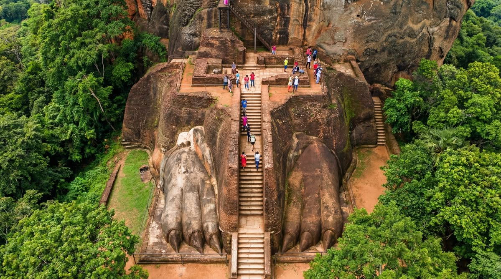

The 8th Wonder of the World, a 5th-century masterpiece of urban planning, architecture, and hydraulic engineering.
Built by King Kashyapa (477 - 495 AD), Sigiriya served as a royal citadel for nearly 20 years. The rock itself is a colossal column of igneous rock magma, rising 200 metres above the surrounding plains. The site is a masterpiece of ancient urban planning, with a sophisticated palace complex perched atop the summit.
The site is famous for the 'Lion's Paw' entrance, the mirror wall with its ancient graffiti, and the celestial maiden frescoes. At the summit, you can explore the ruins of the royal palace, including the King's throne and bathing pools, while enjoying 360-degree views of the jungle. It is a UNESCO World Heritage site and a primary icon of Sri Lankan history.
Back to Sigiriya Hub